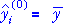
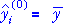
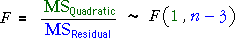

| Model | Fitted values (predicted response) | |
|---|---|---|
| Constant |  | |
| Linear model | ||
| Quadratic model |
Analysis of variance table
An analysis of variance table can be formed with sequential sums of squares from the following three models of increasing complexity.
| Model | Fitted values (predicted response) | |
|---|---|---|
| Constant |  | |
| Linear model | ||
| Quadratic model |
Since each model has one more parameter than the previous model in the sequence, the two sums of squares for adding linear and then quadratic terms each have 1 degree of freedom.

F ratio and p-value
Testing whether there is curvature in the quadratic model is equivalent to testing whether the coefficient of x2 is zero,

This test is based on the ratio of the mean quadratic and mean residual sums of squares in the anova table. This F ratio has an F distribution when H0 is true — i.e. when the underlying model is linear,

The F distribution does not involve unknown parameters, so F can be used as a test statistic.
High values of the F ratio give evidence of nonlinearity, so the p-value is the upper tail area from the F distribution.
If it is concluded from the F ratio for the quadratic term that there is no curvature, it is then possible to use the F ratio for the linear term to test whether there is any relationship at all.
Illustration
The diagram below shows the calculations for an artificially generated data set.
The p-value for the test is the upper tail-area of the F distribution and is usually evaluated using a computer. (It can also be approximated using printed tables of the F distributions.)
Click Another Data Set several times and observe that all p-values between 0 and 1 are equally likely (since the null hypothesis is initially true).
Use the slider at the top right to change the model to one with curvature. Click Another Data Set a few more times and observe that the F-ratio tends to be larger and the p-value closer to zero.
P-values near zero therefore give evidence of curvature.
Examples
Analysis of variance is used to test for curvature in several data sets below. Read the conclusion for each test carefully.